Hybrid Images
Approach Used and Results
Derek (Low frequency) and cat Nutmeg (high frequency). Approach as explained on the main page, with parameters \( \sigma_1 = 18, \sigma_2 = 16\) for standard deviation, \( k = [6\sigma] + 1\) for window size, and \( h_ 1 = 0.15, h_2 = 0.8\) as the lower and upper threshold, respectively.
Before


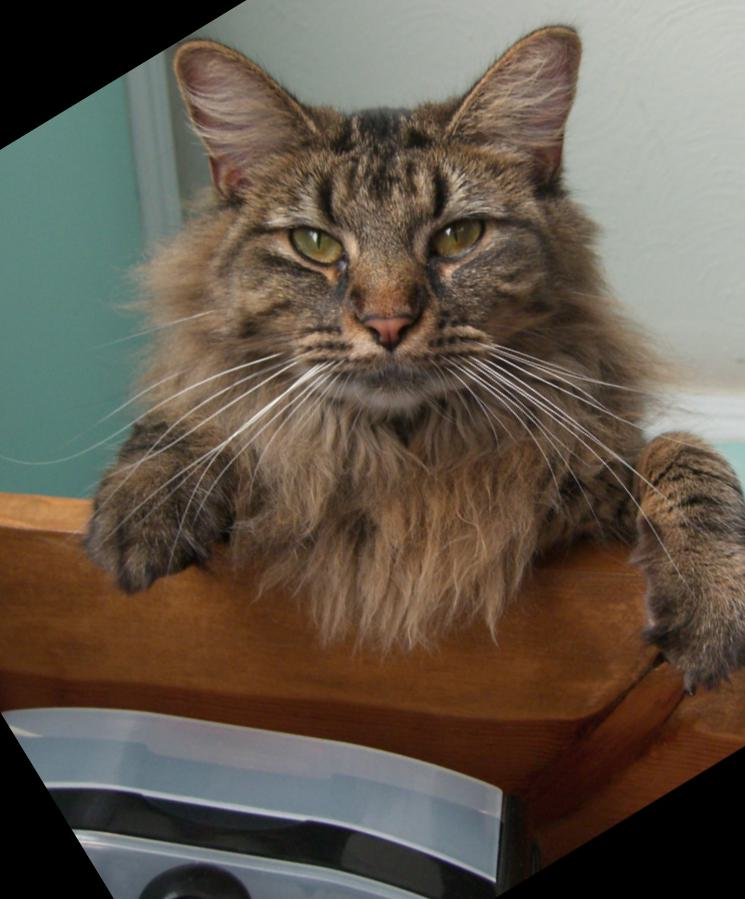
Hybrid
Before
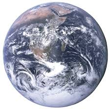
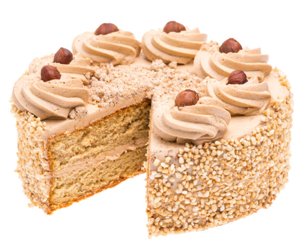
Aligned
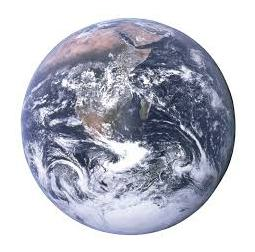
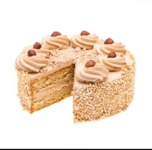
Hybrid
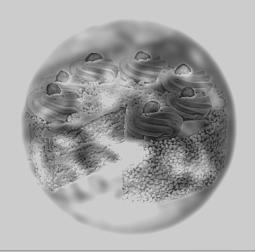
log FFT plot for Earth before and after the Low-Pass Gaussian Filter
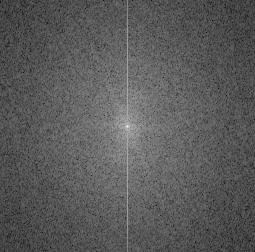
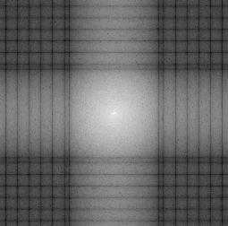
log FFT plot for Cake before and after the High-Pass Gaussian Filter
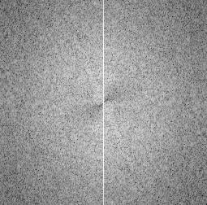
log FFT plot for Hybrid Image
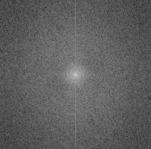
Squaring (low frequency) the Circle (high frequency), Fails Again. Approach as explained on the main page, with parameters \( \sigma_1 = 1, \sigma_2 = 6\) for standard deviation, \( k = [6\sigma] + 1\) for window size, and \( h_ 1 = 0.01, h_2 = 0.9\) as the lower and upper threshold, respectively.
Before
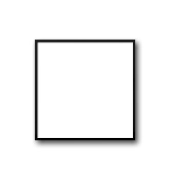
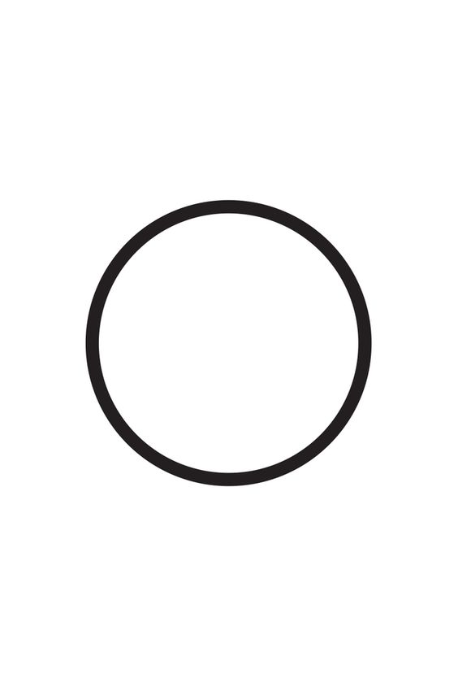
Aligned
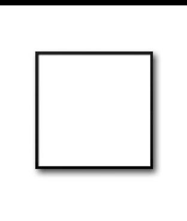
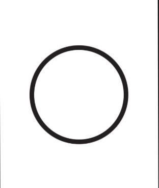
Hybrid
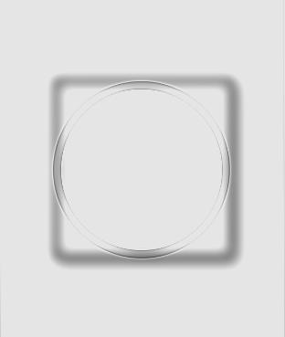
We will note here that on increasing \( \sigma_1, \sigma_2 \) or decreasing the threshold range (in the sense of allowing fewer values to pass), the image would not improve in hybridization and then gray out after a certain value, producing nothing of use. We are showing only a sample of parameters which illustrates the issue well.
Observations
It is interesting to note that the log FFT plot for the low frequencies of Earth looks like a periodic function. This may be due to the Gradients of water on Earth being flattened out by the Gaussian blur, producing a region on which the image is a step function.Additionally, observe that the third hybrid image of the series fails miserable, with the low-frequency square still visible, while it is hard to extract details from the high-frequency circle. The reason is simply that these shapes have only one really strong edge. From the perspective of blurring, with several frequencies peaking at \(1\) and the rest being \(0\), the Gaussian has a harder time flattening the values via convolution. From a Fourier transforms perspective, we have the square and circle as two delta functions defined on curves on the image grid, so their Fourier transform forms periodic functions on the grid. This function oscillates between \(0\) and \(1\) for both, so removing low or high frequencies from any threshold does not prove effective in blurring (values/frequencies are uniformly distributed).